Findings memo, round two
Twelve more claims, including the two we could not dismiss on paper, and what the CPS microdata say about each.
| # | The claim, as its proponents make it | Tests | Verdict |
|---|---|---|---|
| C18 | The zero is the proof. Male payroll growth is flat because a two-thirds-male immigrant workforce left and native men filled the jobs one for one. Hypothesis: Native male employment rises by roughly the foreign-born male decline, which requires native male EPOP to rise. Found: Full replacement needed the native male employment rate to rise +0.43 pp; it fell 0.26 points, and native men’s share of employment in immigrant-intensive occupations has not moved in a decade. | H24 | REFUTED |
| C19 | The workers who actually compete with new arrivals are prior immigrants. Naturalized citizens should be the biggest winners, and they vote. Hypothesis: Naturalized-citizen employment and wages improve, and improve most in high-exposure occupations. Found: Their employment rate did rise +0.31 pp while the native-born rate fell, but their unemployment rose too, their real wage growth was the weakest of any group at -0.4%, and the exposure gradient is 0.0006 (p = 0.96). | H25 | MIXED |
| C9 | Done properly, with within-year consistent weights, the levels show natives gained about two million jobs a year. Hypothesis: Within-year native employment gains in 2025 and 2026 beat prior years and beat what population growth implies. Found: The 1,882 thousand replicates, but it sits around the 30th percentile of 2015–2024 and is smaller than the 2,157 thousand that measured native population growth implies on its own. | H15 | REFUTED |
| C10 | Immigration is what kept young U.S.-born men out of the workforce. Remove it and they come back. Hypothesis: Native male LFP and EPOP rise at 16-24 and 25-34, most without a BA. Found: Native men aged 20–34 without a degree saw employment fall from 75.0% to 74.4% and unemployment rise from 6.47% to 6.88%. | H16 | REFUTED |
| C11 | The removed workforce was two-thirds male, so native men are the closest substitutes and gain most. Hypothesis: Native men improve relative to native women, most where occupational overlap is highest. Found: Native men do have the higher overlap with immigrant labor (18.7% against 15.8%), and got nothing for it: their dose-response coefficient is 0.0098, the wrong sign and insignificant. | H17 | REFUTED |
| C12 | Construction is the test case: heavily immigrant, heavily male, heavily non-college. Hypothesis: Native construction unemployment falls; hours and wages rise. Found: The foreign-born share of construction fell from 30.4% to 27.1% and native construction unemployment rose from 4.55% to 5.13%. | H18 | REFUTED |
| C13 | Wage growth accelerated at the bottom: the bottom quartile is growing three times faster than the top. Hypothesis: A matched-worker tracker shows bottom-quartile native wage growth accelerating after Jan 2025. Found: On a matched-worker tracker the bottom quartile ran 2.5 times the top in 2022 and 1.1 times in 2026, and what is left has no gradient in immigrant exposure. | H19 | REFUTED |
| C8 | Immigration is a labor-supply subsidy to capital. Removing it shifts income back to labor. Hypothesis: The labor share of income rises. Found: The labor share fell 3.5 index points to 93.4, the lowest of 318 quarters since 1947. | H14 | REFUTED |
| C14 | Even if nominal wages are flat, deportations cut rents, so native real wages rose. Hypothesis: Rent inflation falls faster where immigrants lived; native real wages rise on a shelter-adjusted deflator. Found: Rent inflation peaked in March 2023, two years before enforcement; it decelerated least in the West; and stripping shelter out of the deflator makes 2026 real wages look worse, not better. | H20 | REFUTED |
| C15 | Go occupation by occupation: roofers, drywall, meatpacking, landscaping, housekeeping. Hypothesis: Native unemployment, hours and wages improve in the highest foreign-born-share occupations. Found: Across the twenty most immigrant-intensive occupations, native unemployment fell in 4, hours rose in 7, and both together in 1. | H21 | REFUTED |
| C16 | Natives step into the businesses immigrants ran. Hypothesis: Native self-employment rises, especially in the construction trades. Found: Native self-employment fell from 9.79% to 9.54%, and fell furthest in the most immigrant-intensive quartile of occupations. | H22 | REFUTED |
| C17 | Illegal immigration undercut union standards; removing it raises density and the union premium. Hypothesis: Native union coverage and the native union wage premium rise. Found: Native union coverage went from 11.51% to 11.39% and the union wage premium from 0.151 to 0.145 log points. Nothing moved. | H23 | NO EFFECT FOUND |
Ordered by how hard the claim was to beat, not by claim number. C8–C17 continue the numbering from the first memo; C18 and C19 were added after the first draft of this one.
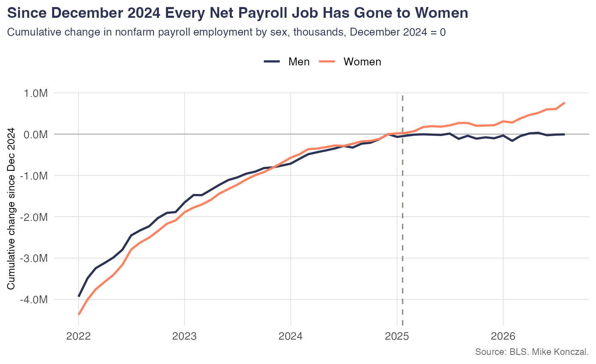
The fact is not in dispute. Men have added essentially no payroll jobs in twenty months, after adding 1,350 thousand in the twenty months before. The question is what it means, and there is a reading on which it is evidence for the policy: the removed workforce was disproportionately male, native men took the vacated jobs, and the two flows net to zero. That is the best argument on this page and it has four testable consequences.
Native male employment can rise for two reasons: the native male population grew, or a larger share of it works. Only the second is filling a vacated job. Measured foreign-born male employment fell by 476 thousand. Absorbing all of that would have required the native male employment rate to rise +0.43 pp. It fell 0.26 points instead, and native male unemployment rose +0.54 pp. Net of population growth, the number of native men working went down by about 280 thousand.
This is the clean one. If native men moved into the work immigrants left, the share of native male employment sitting in high-foreign-born-share occupations has to rise. The overlap index below distributes each group’s employment across occupations and weights by each occupation’s fixed 2022–24 foreign-born share, so multiplying every native weight by the same factor leaves it unchanged. It is immune to the reweighting problem in a way that no level and no level-ratio is.
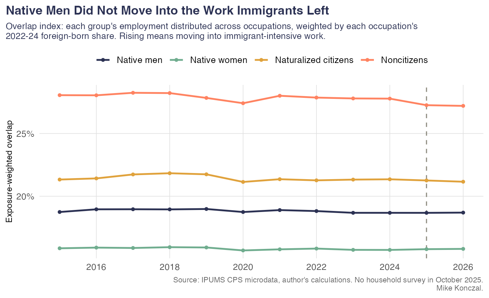
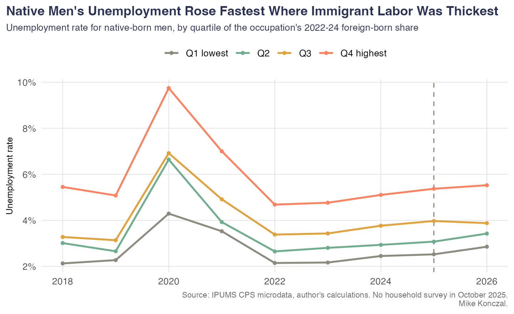
| yr | exp q | unrate | hrs | ptecon |
|---|---|---|---|---|
| 2022 | Q1 lowest | 0.0215 | 42.8606 | 0.0124 |
| 2023 | Q1 lowest | 0.0217 | 42.5087 | 0.0132 |
| 2024 | Q1 lowest | 0.0245 | 42.5499 | 0.0137 |
| 2025 | Q1 lowest | 0.0252 | 42.3262 | 0.0143 |
| 2026 | Q1 lowest | 0.0285 | 42.3665 | 0.0131 |
| 2022 | Q2 | 0.0265 | 41.3796 | 0.0165 |
| 2023 | Q2 | 0.0280 | 40.9928 | 0.0160 |
| 2024 | Q2 | 0.0293 | 40.6880 | 0.0184 |
| 2025 | Q2 | 0.0307 | 40.6490 | 0.0192 |
| 2026 | Q2 | 0.0342 | 40.6595 | 0.0214 |
| 2022 | Q3 | 0.0338 | 40.8822 | 0.0208 |
| 2023 | Q3 | 0.0343 | 40.7289 | 0.0203 |
| 2024 | Q3 | 0.0377 | 40.5571 | 0.0232 |
| 2025 | Q3 | 0.0397 | 40.5287 | 0.0253 |
| 2026 | Q3 | 0.0388 | 40.4246 | 0.0262 |
| 2022 | Q4 highest | 0.0469 | 40.4987 | 0.0285 |
| 2023 | Q4 highest | 0.0477 | 40.4395 | 0.0277 |
| 2024 | Q4 highest | 0.0511 | 40.3484 | 0.0295 |
| 2025 | Q4 highest | 0.0537 | 40.1472 | 0.0326 |
| 2026 | Q4 highest | 0.0553 | 40.0124 | 0.0315 |
Native-born men only. exp q is the quartile of the occupation’s 2022-24 foreign-born employment share. ptecon is the share working part time for economic reasons.
Native men’s unemployment rose in every exposure quartile and their usual hours fell most in the most exposed quartile. Both run against the substitution prediction.
| series | prior 20m | policy 20m | change |
|---|---|---|---|
| men_nf | 1350 | -6.0 | -1356.0 |
| women_nf | 1591 | 765.0 | -826.0 |
| tot_nf | 2941 | 759.0 | -2182.0 |
| construction | 321 | 83.0 | -238.0 |
| manufacturing | -191 | -55.0 | 136.0 |
| transport_wh | 86 | -56.9 | -142.9 |
| health | 1592 | 1027.3 | -564.7 |
| leisure | 375 | 139.0 | -236.0 |
Payroll employment change, thousands, over two 20-month windows: April 2023 to December 2024, and December 2024 to the latest month.
Health care alone added 1,027 thousand jobs, more than the entire net payroll gain of 759 thousand. Manufacturing and transportation and warehousing both shrank. The male payroll flatline is mostly a sectoral story about which industries were hiring, and health care is about three-quarters female. That is a demand-composition explanation, and it has very little to do with immigration in either direction.
The literature usually cited to show immigration does not hurt native workers does not say it hurts nobody. It says the incidence falls on previously arrived immigrants, who are close substitutes for new arrivals in production, while natives specialise into language- and communication-intensive tasks and are partly complements. Run that forward and the prediction is sharp: removing new immigrants should raise the wages and employment of prior immigrants, above all naturalized citizens, who cannot be removed. They are also voters, which is why the political argument that Democrats lose ground with naturalized citizens on immigration has an economic premise underneath it that can be checked.
Three things make this the strongest test in either memo. It is the substitution model’s best prediction rather than its weakest. It has a within-model prediction about magnitudes: the gain for naturalized citizens should exceed the gain for natives. And naturalized citizens are the best-measured group in the data.
| group | avg 2024 | avg recent | pct change |
|---|---|---|---|
| Native-born | 69046.8 | 65154.5 | -5.6 |
| Naturalized citizens | 6175.8 | 6020.3 | -2.5 |
| Noncitizens | 6029.4 | 4978.8 | -17.4 |
| All | 81251.9 | 76153.5 | -6.3 |
Unweighted CPS respondents by citizenship, 2024 monthly average versus September 2025 to August 2026. Raw interview counts carry no weights, so they isolate survey participation.
The group the theory says should gain most is the group whose survey participation held up best, falling 2.5 percent against 17.4 percent for noncitizens. The usual objection that we are looking at a selection artifact is weakest exactly here.
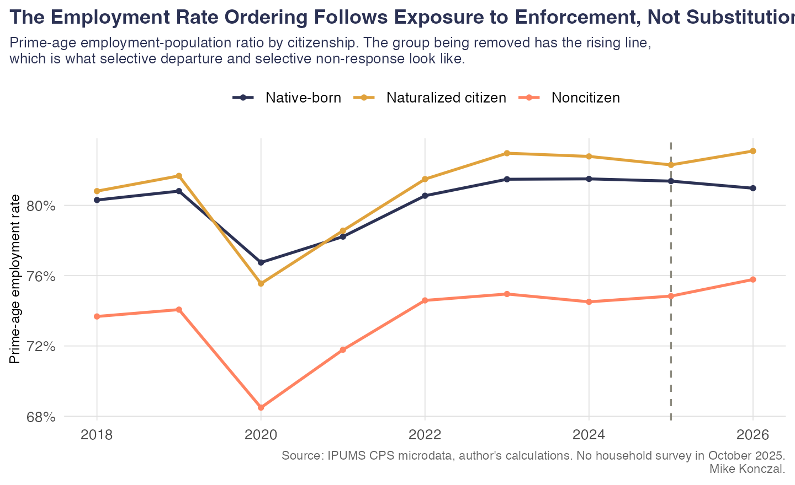
Their unemployment still rose. Naturalized-citizen prime-age unemployment moved +0.28 pp from 2024 to 2026. Less than the native-born (+0.51 pp), but the substitution story predicts a fall, not a smaller rise.
Their wages did worst of anyone. On the matched-worker tracker, which follows the same person twelve months apart and so cannot be fooled by composition, naturalized citizens’ real wage growth was -0.4% in 2026 against 0.7% for the native-born and 1.1% for noncitizens. The group that should have been bid up was the only one whose real wages fell.
| grp | yr | tracker | tracker real | n |
|---|---|---|---|---|
| All workers | 2024 | 0.0455 | 0.0154 | 39671 |
| All workers | 2025 | 0.0400 | 0.0129 | 35006 |
| All workers | 2026 | 0.0398 | 0.0064 | 22526 |
| Foreign-born | 2024 | 0.0400 | 0.0101 | 5886 |
| Foreign-born | 2025 | 0.0364 | 0.0094 | 5429 |
| Foreign-born | 2026 | 0.0381 | 0.0034 | 3652 |
| Native men | 2024 | 0.0455 | 0.0148 | 16995 |
| Native men | 2025 | 0.0417 | 0.0139 | 14919 |
| Native men | 2026 | 0.0425 | 0.0100 | 9535 |
| Native women | 2024 | 0.0485 | 0.0179 | 16790 |
| Native women | 2025 | 0.0400 | 0.0131 | 14658 |
| Native women | 2026 | 0.0378 | 0.0049 | 9339 |
| Native, BA+ | 2024 | 0.0500 | 0.0187 | 14645 |
| Native, BA+ | 2025 | 0.0422 | 0.0151 | 13237 |
| Native, BA+ | 2026 | 0.0394 | 0.0061 | 8512 |
| Native, no BA | 2024 | 0.0448 | 0.0147 | 19140 |
| Native, no BA | 2025 | 0.0399 | 0.0122 | 16340 |
| Native, no BA | 2026 | 0.0403 | 0.0079 | 10362 |
| Native-born | 2024 | 0.0463 | 0.0163 | 33785 |
| Native-born | 2025 | 0.0405 | 0.0133 | 29577 |
| Native-born | 2026 | 0.0400 | 0.0072 | 18874 |
| Naturalized citizens | 2024 | 0.0360 | 0.0061 | 3179 |
| Naturalized citizens | 2025 | 0.0345 | 0.0072 | 2842 |
| Naturalized citizens | 2026 | 0.0303 | -0.0042 | 2021 |
| Naturalized, no BA | 2024 | 0.0400 | 0.0101 | 1597 |
| Naturalized, no BA | 2025 | 0.0294 | 0.0020 | 1430 |
| Naturalized, no BA | 2026 | 0.0333 | -0.0019 | 941 |
| Noncitizens | 2024 | 0.0466 | 0.0153 | 2707 |
| Noncitizens | 2025 | 0.0400 | 0.0126 | 2587 |
| Noncitizens | 2026 | 0.0455 | 0.0106 | 1631 |
Median 12-month wage growth, matched person to person, nominal and real. A matched tracker conditions on being employed in both periods, so it removes composition bias and adds survivorship bias; read it beside the cross-sectional numbers, not instead of them.
There is no exposure gradient. The mechanism requires the gain to show up where immigrant labor was thickest. It does not, for naturalized citizens or for natives.
| outcome | spec | beta | se | p | n |
|---|---|---|---|---|---|
| d_unrate | Naturalized citizens 2025-26 | 0.0006 | 0.0136 | 0.9620 | 101 |
| d_hrs | Naturalized citizens 2025-26 | 1.8923 | 1.3127 | 0.1526 | 101 |
| d_unrate | Naturalized citizens PLACEBO 2018-19 | -0.0292 | 0.0132 | 0.0288 | 113 |
| d_hrs | Naturalized citizens PLACEBO 2018-19 | -0.5156 | 0.6951 | 0.4598 | 113 |
| d_unrate | Native-born 2025-26 | 0.0099 | 0.0077 | 0.2029 | 351 |
| d_hrs | Native-born 2025-26 | -0.0313 | 0.5180 | 0.9519 | 351 |
| d_unrate | Native-born PLACEBO 2018-19 | -0.0219 | 0.0071 | 0.0021 | 362 |
| d_hrs | Native-born PLACEBO 2018-19 | 0.0688 | 0.2946 | 0.8154 | 362 |
Occupation-level regressions of the change in the group’s unemployment rate and usual hours on the occupation’s pre-period foreign-born share, weighted by pre-period employment, HC1 standard errors. Substitution predicts a negative unemployment coefficient, larger for naturalized citizens than for natives.
In the 2018–19 placebo window both groups show the predicted negative coefficient, and it is larger for naturalized citizens, exactly as the model says. In 2025–26 it is gone for both. A genuinely tight labor market produces the gradient; this episode did not.
| grp | yr | epop | lfpr | unrate | n |
|---|---|---|---|---|---|
| Naturalized, non-Hispanic | 2023 | 0.8324 | 0.8533 | 0.0245 | 22607 |
| Naturalized, non-Hispanic | 2024 | 0.8333 | 0.8563 | 0.0269 | 22901 |
| Naturalized, non-Hispanic | 2025 | 0.8274 | 0.8563 | 0.0338 | 20277 |
| Naturalized, non-Hispanic | 2026 | 0.8309 | 0.8577 | 0.0312 | 13991 |
| Naturalized, Hispanic | 2023 | 0.8248 | 0.8457 | 0.0247 | 11912 |
| Naturalized, Hispanic | 2024 | 0.8183 | 0.8420 | 0.0282 | 12343 |
| Naturalized, Hispanic | 2025 | 0.8150 | 0.8396 | 0.0294 | 10620 |
| Naturalized, Hispanic | 2026 | 0.8307 | 0.8552 | 0.0286 | 7532 |
Naturalized citizens by ethnicity. Note this does not reproduce the sharp Hispanic-citizen penalty the first memo found among the native-born, which is an open tension worth naming rather than smoothing over.
| arrgrp | yr | epop | unrate | n |
|---|---|---|---|---|
| Arrived 2000-2015 | 2023 | 0.8324 | 0.0242 | 16091 |
| Arrived 2000-2015 | 2024 | 0.8351 | 0.0274 | 16983 |
| Arrived 2000-2015 | 2025 | 0.8305 | 0.0306 | 14735 |
| Arrived 2000-2015 | 2026 | 0.8385 | 0.0289 | 10393 |
| Arrived 2016 or later | 2023 | 0.7818 | 0.0324 | 2443 |
| Arrived 2016 or later | 2024 | 0.7902 | 0.0294 | 3177 |
| Arrived 2016 or later | 2025 | 0.7828 | 0.0459 | 3399 |
| Arrived 2016 or later | 2026 | 0.7949 | 0.0428 | 2772 |
| Arrived before 2000 | 2023 | 0.8340 | 0.0239 | 15985 |
| Arrived before 2000 | 2024 | 0.8274 | 0.0271 | 15084 |
| Arrived before 2000 | 2025 | 0.8249 | 0.0303 | 12763 |
| Arrived before 2000 | 2026 | 0.8341 | 0.0277 | 8358 |
By arrival era. YRIMMIG is a bracketed code in this extract, not a year, so the cohorts are coarse on purpose.
Camarota and Zeigler concede the January population-control problem and route around it by comparing January to December of the same year, where the controls never change. On that basis they report native employment gains of about two million within 2025 and 1.9 million within 2026 through June, against 758,000 within 2024 and 367,000 within 2023. It is a better argument than the one the first memo refuted, and the replication works: we get 1,882 thousand within 2025 and 1,931 thousand within 2026 through August.
Then it fails three ways.
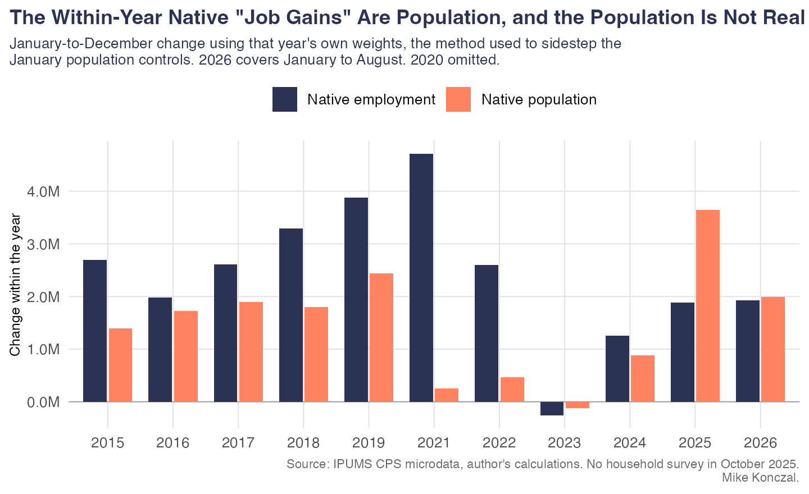
The comparison years chosen are 2023 and 2024, which were the two weakest in a decade. Set 2025 against the full 2015–2024 distribution and it sits at roughly the 30th percentile. Within-year native employment rose 3,287 thousand in 2018 and 3,879 thousand in 2019, both far above 2025. Nothing unusual happened.
Hold that aside and the claim collapses on its own arithmetic. At the January 2025 employment rate, that measured population growth alone delivers 2,157 thousand more employed natives, which is more than the 1,882 thousand actually recorded. The employment-rate contribution was -274 thousand, and native EPOP within 2025 changed -0.12 pp. Either the native population level is trustworthy, in which case the job gain is smaller than population growth alone implies, or it is not, in which case the employment level cannot be used either. There is no third option.
| yr | months | d emp nat | d emp for | d emp tot | d pop nat | d epop nat | emp nat from pop | emp nat from rate |
|---|---|---|---|---|---|---|---|---|
| 2015 | 11 | 2691.519 | 1043.873 | 3735.392 | 1399.317 | 0.009 | 814.886 | 1876.632 |
| 2016 | 11 | 1980.492 | 546.806 | 2527.298 | 1721.132 | 0.005 | 1011.501 | 968.992 |
| 2017 | 11 | 2612.38 | 386.236 | 2998.616 | 1898.476 | 0.007 | 1117.761 | 1494.619 |
| 2018 | 11 | 3287.14 | 965.612 | 4252.752 | 1795.163 | 0.01 | 1061.59 | 2225.55 |
| 2019 | 11 | 3879.304 | -150.144 | 3729.16 | 2439.086 | 0.011 | 1450.997 | 2428.308 |
| 2020 | 11 | -5432.416 | -1492.261 | -6924.677 | 1151.792 | -0.028 | 690.969 | -6123.385 |
| 2021 | 11 | 4710.19 | 2389.946 | 7100.136 | 253.578 | 0.021 | 143.828 | 4566.362 |
| 2022 | 11 | 2600.618 | 1240.453 | 3841.071 | 465.146 | 0.011 | 271.668 | 2328.95 |
| 2023 | 11 | -254.017 | 1431.871 | 1177.855 | -117.722 | -0.001 | -70.068 | -183.949 |
| 2024 | 11 | 1254.038 | 811.898 | 2065.936 | 881.931 | 0.003 | 521.251 | 732.787 |
| 2025 | 11 | 1882.2 | -792.554 | 1089.646 | 3646.843 | -0.001 | 2156.537 | -274.337 |
| 2026 | 7 | 1931.243 | -567.115 | 1364.128 | 1994.825 | 0.003 | 1159.093 | 772.15 |
January-to-December change using that year’s own weights, thousands. 2026 is January to August. from pop is the employment change implied by measured population growth at an unchanged January employment rate.
Within 2025 the same calculation gives 1,090 thousand for total employment, all workers, because the foreign-born change was -793 thousand. A two-million native job gain inside a one-million total is a transfer between two columns of the same table, not job creation. And the other survey is blunter still: payroll employment over exactly that window, January to December 2025, grew 164 thousand. Two million native-born jobs did not appear in a labor market that added 164 thousand payroll positions.
Two claims here, pointing opposite ways. Camarota’s is that immigration kept young U.S.-born men out of the workforce and removing it brings them back. Ours, constructed as the hardest version we could build against ourselves, is that the removed workforce was 61.6% male, so native men are the closest substitutes in the whole economy and should be the single biggest winners. Both predict native men improving.
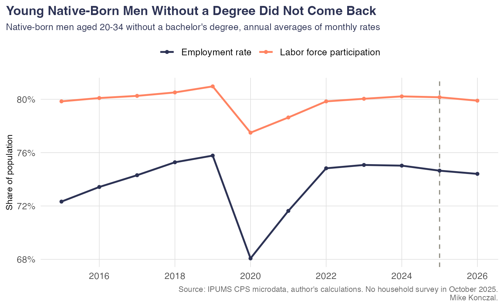
| yr | epop | lfpr | unrate | n | months |
|---|---|---|---|---|---|
| 2022 | 0.7483 | 0.7984 | 0.0629 | 66846 | 12 |
| 2023 | 0.7508 | 0.8004 | 0.062 | 64847 | 12 |
| 2024 | 0.7502 | 0.8022 | 0.0647 | 64131 | 12 |
| 2025 | 0.7465 | 0.8015 | 0.0687 | 56361 | 11 |
| 2026 | 0.7441 | 0.799 | 0.0688 | 38803 | 8 |
Native-born men aged 20-34 without a bachelor’s degree, annual averages of monthly rates.
| grp | overlap | n occ |
|---|---|---|
| Native men | 0.1872 | 365 |
| Native women | 0.1576 | 365 |
| Native men, no BA | 0.2024 | 350 |
| Native women, no BA | 0.1737 | 351 |
| Native men, prime age | 0.1846 | 365 |
| Native women, prime age | 0.1541 | 365 |
| All native-born | 0.1730 | 365 |
| Noncitizens (reference) | 0.2781 | 364 |
Exposure-weighted overlap with immigrant labor, 2022-24. Each group’s employment distributed across occupations, dotted with each occupation’s foreign-born share.
Native men have measurably more overlap with immigrant labor than native women, and native men without a degree more still. The top exposure quartile of occupations is 65.5% male. The theory’s demographic prediction is therefore not optional: native men should be the winners.
| yr | grp | epop | lfpr | unrate |
|---|---|---|---|---|
| 2023 | Foreign-born men | 0.8923 | 0.9215 | 0.0317 |
| 2024 | Foreign-born men | 0.8908 | 0.9216 | 0.0335 |
| 2025 | Foreign-born men | 0.8912 | 0.9230 | 0.0345 |
| 2026 | Foreign-born men | 0.9027 | 0.9305 | 0.0299 |
| 2023 | Native men | 0.8554 | 0.8847 | 0.0331 |
| 2024 | Native men | 0.8535 | 0.8847 | 0.0354 |
| 2025 | Native men | 0.8550 | 0.8872 | 0.0362 |
| 2026 | Native men | 0.8500 | 0.8861 | 0.0408 |
| 2023 | Foreign-born women | 0.6758 | 0.7015 | 0.0366 |
| 2024 | Foreign-born women | 0.6682 | 0.7019 | 0.0480 |
| 2025 | Foreign-born women | 0.6706 | 0.7036 | 0.0468 |
| 2026 | Foreign-born women | 0.6860 | 0.7171 | 0.0433 |
| 2023 | Native women | 0.7744 | 0.7973 | 0.0288 |
| 2024 | Native women | 0.7775 | 0.8030 | 0.0317 |
| 2025 | Native women | 0.7732 | 0.8005 | 0.0341 |
| 2026 | Native women | 0.7706 | 0.7997 | 0.0364 |
Prime-age, by sex and nativity, annual averages of monthly rates.
They were not. Native men’s prime-age unemployment rose more than native women’s, and their employment rate fell. We should be straight about one wrinkle: native women’s employment rate fell by more than native men’s over the same window, so this is not a story about men doing uniquely badly. It is a story about the group with the most exposure to immigrant competition getting nothing while the labor market softened for everyone.
| outcome | spec | beta | se | p | n |
|---|---|---|---|---|---|
| d_nat_unrate | Men 2025-26 | 0.0098 | 0.0101 | 0.3300 | 284 |
| d_nat_hrs | Men 2025-26 | -0.3797 | 0.7537 | 0.6148 | 284 |
| d_log_nat_emp | Men 2025-26 | -0.0068 | 0.0891 | 0.9389 | 284 |
| d_nat_unrate | Men PLACEBO 2018-19 | -0.0213 | 0.0100 | 0.0348 | 312 |
| d_nat_hrs | Men PLACEBO 2018-19 | 0.1718 | 0.4082 | 0.6742 | 312 |
| d_log_nat_emp | Men PLACEBO 2018-19 | 0.0459 | 0.0487 | 0.3466 | 312 |
| d_nat_unrate | Women 2025-26 | 0.0066 | 0.0171 | 0.6983 | 229 |
| d_nat_hrs | Women 2025-26 | 0.4603 | 0.6301 | 0.4658 | 229 |
| d_log_nat_emp | Women 2025-26 | 0.1218 | 0.0952 | 0.2022 | 229 |
| d_nat_unrate | Women PLACEBO 2018-19 | -0.0179 | 0.0085 | 0.0362 | 252 |
| d_nat_hrs | Women PLACEBO 2018-19 | -0.0791 | 0.4224 | 0.8516 | 252 |
| d_log_nat_emp | Women PLACEBO 2018-19 | 0.0002 | 0.0604 | 0.9980 | 252 |
Occupation-level regressions run separately by sex, weighted by pre-period native employment, HC1 standard errors. Substitution predicts a negative coefficient on unemployment and a positive one on hours.
The male dose-response coefficient on unemployment is the wrong sign and insignificant in 2025–26, and the correct sign and significant in the 2018–19 placebo. Same pattern as the pooled result in the first memo, and now visible in the subgroup the theory cares most about.
The best-identified sector available: about a third foreign-born before the campaign, over ninety percent male, mostly non-college, and non-tradable, so the output cannot be moved offshore.
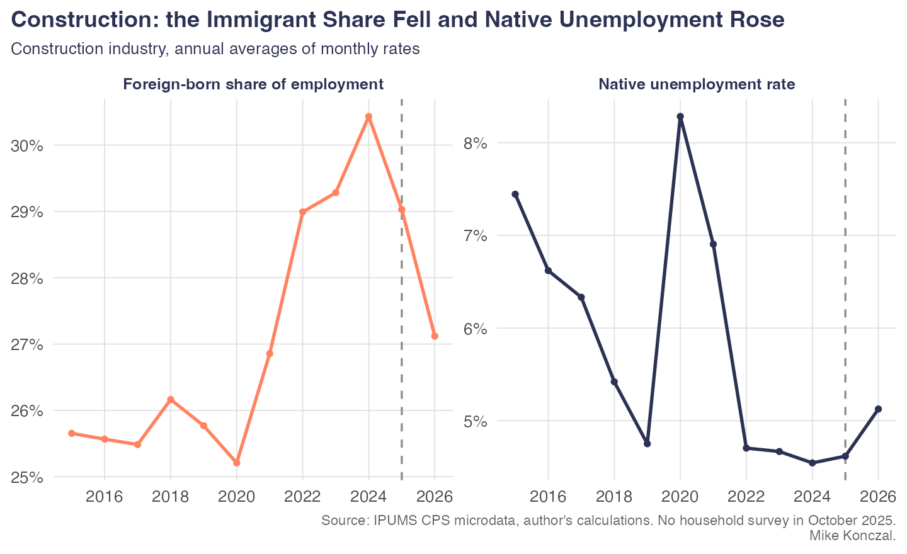
| yr | nat unrate | nat hrs | for share | n | months |
|---|---|---|---|---|---|
| 2022 | 0.047 | 41.7736 | 0.2899 | 44204 | 12 |
| 2023 | 0.0467 | 41.5471 | 0.2928 | 43414 | 12 |
| 2024 | 0.0455 | 41.5906 | 0.3043 | 43818 | 12 |
| 2025 | 0.0462 | 41.4017 | 0.2903 | 38041 | 11 |
| 2026 | 0.0513 | 41.7047 | 0.2712 | 26667 | 8 |
Construction industry, annual averages of monthly rates.
| yr | unrate | hrs | ptecon | n | months |
|---|---|---|---|---|---|
| 2022 | 0.06 | 41.4905 | 0.0331 | 22406 | 12 |
| 2023 | 0.0572 | 41.6053 | 0.0309 | 21525 | 12 |
| 2024 | 0.0589 | 41.5936 | 0.0327 | 21205 | 12 |
| 2025 | 0.0538 | 41.4795 | 0.0333 | 18742 | 11 |
| 2026 | 0.0667 | 41.6045 | 0.0287 | 13096 | 8 |
Native-born men in construction-trades occupations, any industry.
One thing did move the other way and it is worth naming: hours held up and involuntary part-time among native construction men fell, from 3.27% to 2.87%. The natural reading is selection rather than victory, because the marginal workers are the ones who left employment, but it is the only construction number that points the restrictionist way and we are not going to bury it.
Bessent’s claim is that workers without a degree are having their best decade and that the bottom quartile of earners is seeing wage growth about three and a half times the top quartile. The first memo measured wages as cross-sectional percentiles, which is the wrong tool here: when low-wage employment falls, the measured tenth percentile rises for a bad reason. So we rebuilt the Atlanta Fed Wage Growth Tracker from the microdata, matching each worker’s outgoing-rotation record to their own record twelve months earlier. 314,553 matched pairs. That measure cannot be fooled by composition.
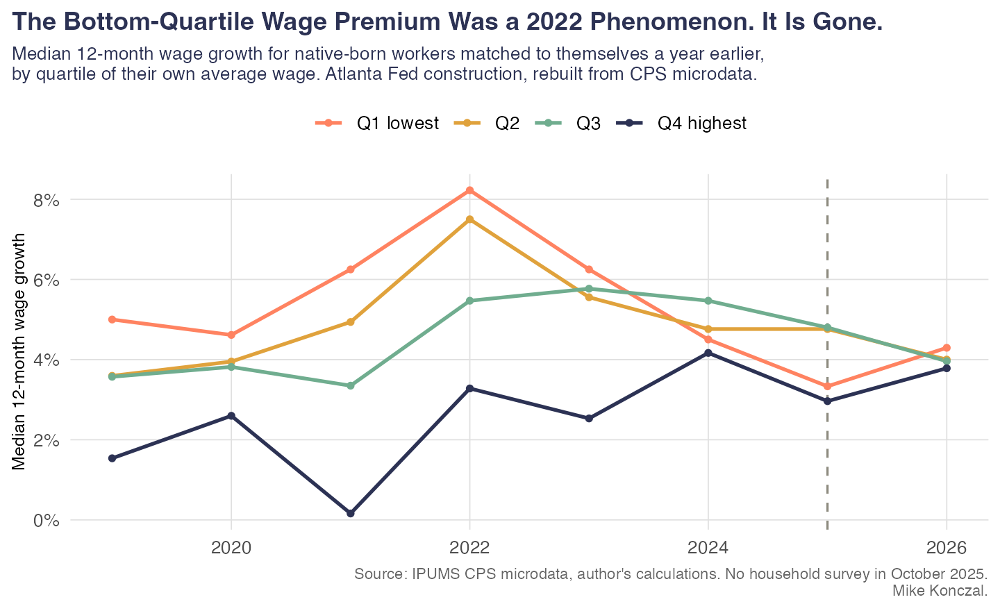
| yr | qtile | tracker | tracker real | n |
|---|---|---|---|---|
| 2021 | Q1 lowest | 0.0625 | 0.0142 | 8306 |
| 2022 | Q1 lowest | 0.0823 | 0.0007 | 8160 |
| 2023 | Q1 lowest | 0.0625 | 0.0192 | 8043 |
| 2024 | Q1 lowest | 0.0450 | 0.0151 | 7906 |
| 2025 | Q1 lowest | 0.0333 | 0.0075 | 6803 |
| 2026 | Q1 lowest | 0.0429 | 0.0121 | 4316 |
| 2021 | Q2 | 0.0494 | 0.0020 | 8980 |
| 2022 | Q2 | 0.0750 | -0.0047 | 8886 |
| 2023 | Q2 | 0.0556 | 0.0179 | 8684 |
| 2024 | Q2 | 0.0476 | 0.0174 | 8521 |
| 2025 | Q2 | 0.0476 | 0.0194 | 7528 |
| 2026 | Q2 | 0.0400 | 0.0078 | 4784 |
| 2021 | Q3 | 0.0335 | -0.0124 | 9215 |
| 2022 | Q3 | 0.0547 | -0.0232 | 9156 |
| 2023 | Q3 | 0.0577 | 0.0174 | 9234 |
| 2024 | Q3 | 0.0547 | 0.0243 | 9031 |
| 2025 | Q3 | 0.0480 | 0.0191 | 7868 |
| 2026 | Q3 | 0.0396 | 0.0063 | 5033 |
| 2021 | Q4 highest | 0.0016 | -0.0255 | 8453 |
| 2022 | Q4 highest | 0.0328 | -0.0436 | 8505 |
| 2023 | Q4 highest | 0.0253 | -0.0146 | 8337 |
| 2024 | Q4 highest | 0.0417 | 0.0129 | 8327 |
| 2025 | Q4 highest | 0.0296 | 0.0032 | 7378 |
| 2026 | Q4 highest | 0.0378 | 0.0041 | 4741 |
Median 12-month wage growth, native-born workers matched to themselves a year earlier, by quartile of their own average wage across the two observations. Quartiles are set on the average rather than the initial wage, following the Atlanta Fed, because ranking on the initial wage imports mean reversion.
Suppose the modest 2026 uptick at the bottom is real. Under the substitution story it has to be concentrated in the occupations where immigrant labor was thickest. That is the whole mechanism.
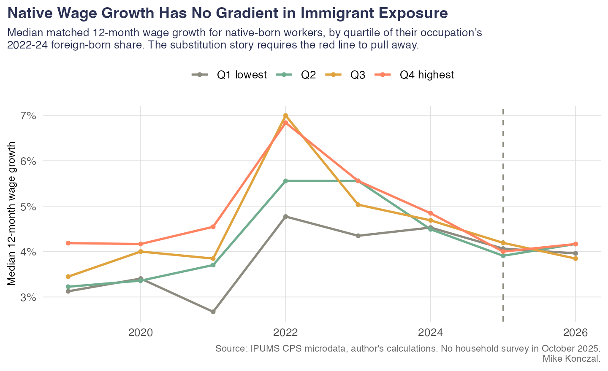
| yr | exp q | tracker | n |
|---|---|---|---|
| 2023 | Q1 lowest | 0.0564 | 933 |
| 2024 | Q1 lowest | 0.0286 | 839 |
| 2025 | Q1 lowest | 0.0324 | 712 |
| 2026 | Q1 lowest | 0.0500 | 472 |
| 2023 | Q2 | 0.0606 | 1684 |
| 2024 | Q2 | 0.0521 | 1778 |
| 2025 | Q2 | 0.0267 | 1463 |
| 2026 | Q2 | 0.0435 | 982 |
| 2023 | Q3 | 0.0679 | 2803 |
| 2024 | Q3 | 0.0486 | 2713 |
| 2025 | Q3 | 0.0370 | 2327 |
| 2026 | Q3 | 0.0388 | 1467 |
| 2023 | Q4 highest | 0.0612 | 2513 |
| 2024 | Q4 highest | 0.0429 | 2465 |
| 2025 | Q4 highest | 0.0385 | 2220 |
| 2026 | Q4 highest | 0.0491 | 1334 |
Bottom-quartile native-born workers only, by quartile of their occupation’s 2022-24 foreign-born share.
It is not. Native wage growth is flat across exposure quartiles in every recent year, and among bottom-quartile natives the 2026 pickup is as large in the least exposed occupations as in the most. Whatever is happening at the bottom of the wage distribution is a macro wage-floor story, and it has no enforcement signature in it.
The claim is that immigration is a labor-supply subsidy to capital, so removing it shifts income back to labor. The claim is wrong before any data arrives. Under CES production in capital and labor with elasticity of substitution σ, the labor share s satisfies
d ln s / d ln(L/K) = (σ − 1) / σ
so cutting labor supply raises the labor share only if σ > 1. The empirical consensus for aggregate capital–labor substitution is well below one. At those values a fall in L/K lowers the labor share. The prediction requires a parameter the profession does not believe in.
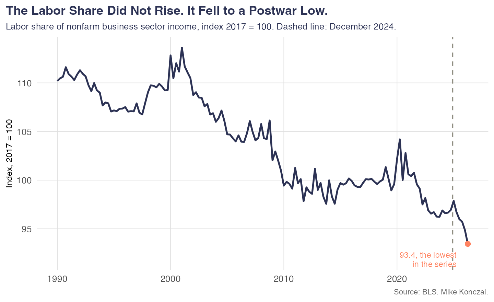
We are not claiming deportations caused that. The labor share moves with profit margins, the capital-spending cycle and measured productivity, and the current artificial-intelligence investment boom is doing most of the work. The point is narrower and sufficient: the claim named a number, the number went the other way, and it went there hard.
| yr | labor share nfb | labor share bus | n q |
|---|---|---|---|
| 2019 | 100.01 | 100.09 | 4 |
| 2020 | 102.29 | 102.42 | 4 |
| 2021 | 100.33 | 100.14 | 4 |
| 2022 | 97.92 | 97.59 | 4 |
| 2023 | 96.43 | 96.34 | 4 |
| 2024 | 96.77 | 96.72 | 4 |
| 2025 | 96.58 | 96.55 | 4 |
| 2026 | 94.14 | 94.29 | 2 |
Annual averages of the quarterly index, 2017 = 100.
If nominal wages will not cooperate, the deflator might. The White House has argued since January 2026 that deportations lowered rents and home prices in high-immigrant metros, which is a real-wage claim routed around the nominal wage. It has three testable parts and fails all three.
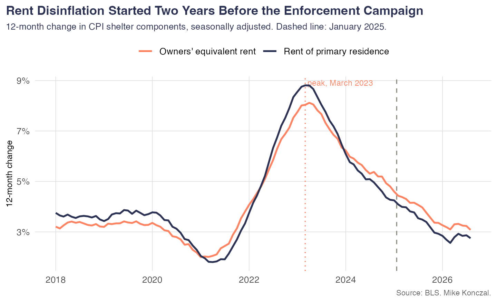
The timing is wrong. Rent-of-primary-residence inflation peaked at 8.8% in March 2023, was already down to 4.3% by December 2024, and is 2.8% now. The deceleration is two years old and is the post-pandemic multifamily supply wave.
The geography is wrong. If enforcement is the mechanism, shelter disinflation should be concentrated where immigrants lived.
| region | foreign share pop | 2022 | 2023 | 2024 | 2025 | 2026 YTD | decel 25 26 | decel 23 24 |
|---|---|---|---|---|---|---|---|---|
| West | 0.190 | 0.0628 | 0.0678 | 0.0419 | 0.0303 | 0.0267 | -0.0152 | -0.0210 |
| Northeast | 0.165 | 0.0360 | 0.0631 | 0.0599 | 0.0458 | 0.0379 | -0.0220 | 0.0239 |
| South | 0.130 | 0.0721 | 0.0889 | 0.0534 | 0.0352 | 0.0259 | -0.0275 | -0.0188 |
| Midwest | 0.075 | 0.0515 | 0.0704 | 0.0592 | 0.0452 | 0.0430 | -0.0162 | 0.0077 |
CPI shelter, 12-month rates averaged within each period, by census region, ordered by foreign-born population share. Regional CPI is published NSA.
The ordering is not monotone in immigrant share and the largest deceleration is in the South, not the West.
And it does not rescue the real wage anyway. Over January to August 2026, headline inflation ran 3.27% while inflation excluding shelter ran 3.35%, and shelter itself ran 3.14%. Shelter is currently holding the headline number down, not propping it up, so stripping it out makes real wages look worse rather than better. The rent disinflation is already inside the deflator that produced the first memo’s negative real wage results.
The version a reader can check line by line. Take the twenty occupations with the highest foreign-born employment share that clear the sample floor, name them, and ask how many delivered for native workers.
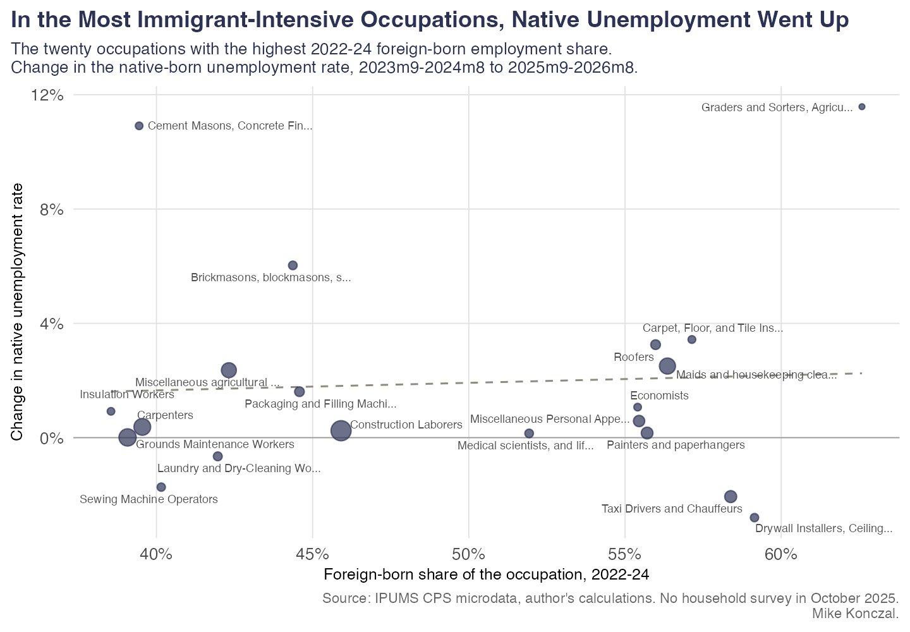
| occupation | foreign share | native share pre | d native share | d unrate | d hours | n |
|---|---|---|---|---|---|---|
| Graders and Sorters, Agricultural Products | 0.6258 | 0.3021 | 0.0152 | 0.1158 | 1.4514 | 54 |
| Drywall Installers, Ceiling Tile Installer | 0.5914 | 0.4255 | 0.0605 | -0.0280 | -1.0166 | 173 |
| Taxi Drivers and Chauffeurs | 0.5838 | 0.4098 | -0.0053 | -0.0206 | -1.5278 | 824 |
| Carpet, Floor, and Tile Installers and Fin | 0.5714 | 0.4383 | -0.0355 | 0.0343 | 1.2400 | 126 |
| Maids and housekeeping cleaners | 0.5636 | 0.4187 | 0.0248 | 0.0251 | -0.3187 | 2186 |
| Roofers | 0.5598 | 0.4333 | -0.0040 | 0.0326 | -0.3479 | 356 |
| Painters and paperhangers | 0.5571 | 0.4416 | -0.0116 | 0.0016 | -0.3559 | 768 |
| Miscellaneous Personal Appearance Workers | 0.5545 | 0.4380 | 0.0512 | 0.0058 | 1.3631 | 663 |
| Economists | 0.5540 | 0.5218 | 0.1471 | 0.0107 | -1.3170 | 115 |
| Medical scientists, and life scientists, a | 0.5193 | 0.5072 | 0.0361 | 0.0015 | 1.9293 | 206 |
| Construction Laborers | 0.4591 | 0.5216 | 0.0369 | 0.0024 | 0.6027 | 4235 |
| Packaging and Filling Machine Operators an | 0.4458 | 0.5110 | 0.0574 | 0.0161 | -0.2032 | 352 |
| Brickmasons, blockmasons, stonemasons, and | 0.4437 | 0.4767 | 0.1293 | 0.0603 | -0.2291 | 210 |
| Miscellaneous agricultural workers, includ | 0.4232 | 0.5753 | 0.0007 | 0.0236 | -1.8363 | 1748 |
| Laundry and Dry-Cleaning Workers | 0.4196 | 0.5854 | -0.0510 | -0.0065 | 1.8690 | 237 |
| Sewing Machine Operators | 0.4015 | 0.5880 | 0.0200 | -0.0173 | -1.3041 | 174 |
| Carpenters | 0.3955 | 0.5942 | 0.0323 | 0.0038 | -0.1412 | 2496 |
| Cement Masons, Concrete Finishers, and Ter | 0.3945 | 0.6107 | -0.0891 | 0.1091 | 3.2631 | 116 |
| Grounds Maintenance Workers | 0.3908 | 0.5923 | 0.0349 | 0.0001 | -0.6253 | 2717 |
| Insulation Workers | 0.3855 | 0.6359 | -0.0099 | 0.0092 | -0.5079 | 113 |
Pre-period 2023m9-2024m8 versus 2025m9-2026m8. Native share is a level-based ratio inside the occupation and inherits the reweighting problem; the unemployment rate and hours do not.
We also tried to put a wage column on this table and could not. Outgoing-rotation records are a quarter of the CPS sample, and only 5 of the twenty occupations have even fifty wage observations in both 2024 and 2026, which is not enough to support twenty separate medians. That margin is reported in the exposure-quartile form instead, above, where the cells are large enough to mean something.
One incidental finding worth a sentence: Economists is on the list, at 55.4% foreign-born. The occupations where immigrant labor concentrates are not only the ones the argument imagines.
Included because a rise here was genuinely possible and would have been the first real point on the board. Immigrants are disproportionately self-employed in the construction trades, landscaping and personal services, and their exit leaves customers, contracts and equipment behind.
| yr | se rate | se uninc rate | se inc rate | n |
|---|---|---|---|---|
| 2022 | 0.0999 | 0.059 | 0.0409 | 489905 |
| 2023 | 0.0969 | 0.0568 | 0.0401 | 480328 |
| 2024 | 0.0979 | 0.0578 | 0.0401 | 473813 |
| 2025 | 0.0972 | 0.0565 | 0.0407 | 415774 |
| 2026 | 0.0954 | 0.055 | 0.0404 | 290573 |
Self-employment as a share of employed native-born workers. CLASSWKR 10, 13 and 14.
| exp q | 2022 | 2023 | 2024 | 2025 | 2026 |
|---|---|---|---|---|---|
| Q1 lowest | 0.0988 | 0.0967 | 0.0958 | 0.0942 | 0.0955 |
| Q2 | 0.0788 | 0.0783 | 0.0762 | 0.0760 | 0.0762 |
| Q3 | 0.1130 | 0.1086 | 0.1092 | 0.1112 | 0.1092 |
| Q4 highest | 0.1034 | 0.0998 | 0.1052 | 0.1012 | 0.0952 |
Native self-employment rate by quartile of occupational immigrant exposure.
| yr | se rate | n |
|---|---|---|
| 2022 | 0.2301 | 32395 |
| 2023 | 0.2154 | 31620 |
| 2024 | 0.2217 | 31290 |
| 2025 | 0.2133 | 27913 |
| 2026 | 0.2112 | 19849 |
Native self-employment rate within the construction industry.
The one restrictionist argument with a labor-movement pedigree: undocumented labor undercuts union standards, so removing it should raise density and the union wage premium. It has never been tested on this episode.
| yr | grp | member rate | cov rate | n |
|---|---|---|---|---|
| 2022 | Native-born | 0.1051 | 0.1176 | 107628 |
| 2023 | Native-born | 0.1039 | 0.1163 | 103833 |
| 2024 | Native-born | 0.1028 | 0.1151 | 102959 |
| 2025 | Native-born | 0.1051 | 0.1175 | 90122 |
| 2026 | Native-born | 0.1032 | 0.1139 | 62974 |
| 2022 | Naturalized citizen | 0.1138 | 0.1245 | 9259 |
| 2023 | Naturalized citizen | 0.1127 | 0.1255 | 9330 |
| 2024 | Naturalized citizen | 0.1170 | 0.1300 | 9468 |
| 2025 | Naturalized citizen | 0.1111 | 0.1242 | 8506 |
| 2026 | Naturalized citizen | 0.1044 | 0.1173 | 6146 |
| 2022 | Noncitizen | 0.0552 | 0.0646 | 9809 |
| 2023 | Noncitizen | 0.0514 | 0.0608 | 9748 |
| 2024 | Noncitizen | 0.0487 | 0.0584 | 10375 |
| 2025 | Noncitizen | 0.0496 | 0.0610 | 8627 |
| 2026 | Noncitizen | 0.0483 | 0.0577 | 5903 |
Union membership and coverage rates among wage and salary workers in the CPS outgoing rotation groups. UNION is available from 2018 forward only.
| yr | premium | se | n |
|---|---|---|---|
| 2022 | 0.1626 | 0.0052 | 68064 |
| 2023 | 0.1513 | 0.0057 | 66148 |
| 2024 | 0.1513 | 0.006 | 67986 |
| 2025 | 0.1563 | 0.0065 | 59890 |
| 2026 | 0.1455 | 0.0079 | 42595 |
Native union wage premium in log points, from a log real wage regression with controls for education, age, age squared, sex, one-digit occupation and one-digit industry.
Native union coverage went from 11.51% to 11.39% and the native union wage premium from 0.151 to 0.145 log points. Nothing happened. Naturalized citizens, the group with the highest union coverage of the three, lost the most.
Four results in this memo do not run our way, and a memo that does not list them is not worth reading.
None of these is nothing. None of them is the mechanism either: in each case the margin that would connect the result to immigration enforcement, a gradient in occupational exposure, is missing.
Written into the plan before any of this ran, so it was not chosen afterwards. We said we would treat the restrictionist case as having a real point if any two of the following held.
| Pre-registered condition | Result |
|---|---|
| Native male prime-age EPOP rose, or rose relative to native female | Fell; relative to women, mixed |
| The male occupational dose-response turned negative and significant with a clean placebo | Wrong sign, insignificant, placebo not clean |
| Matched bottom-quartile wage acceleration concentrated in high-exposure occupations | No exposure gradient |
| Native construction unemployment fell while construction output held up | Unemployment rose |
| A majority of the twenty most immigrant-intensive occupations improved on both unemployment and hours | 1 of 20 did |
| The labor share rose | Postwar low |
| Native men’s occupational overlap index rose | Unchanged in a decade |
| Naturalized citizens gained on employment or wages, and gained more than natives | Employment yes, wages no |
One of eight holds, and only on one of its two margins.
The identification caveats from the first memo apply here unchanged and are not repeated. Three are specific to this round. The overlap index and the within-year decomposition are descriptive accounting, not causal estimates; they establish that a proposed mechanism did not operate, not that something else did. The matched wage tracker trades composition bias for survivorship bias and should never be read on its own. And the naturalized-citizen result is the one place where a selection story and a substitution story make the same prediction about employment rates and are separated only by the wage and dose-response evidence, which is thinner. A reader who weights the employment number more heavily than we do would reach a more mixed verdict on C19, and that is a defensible place to land.